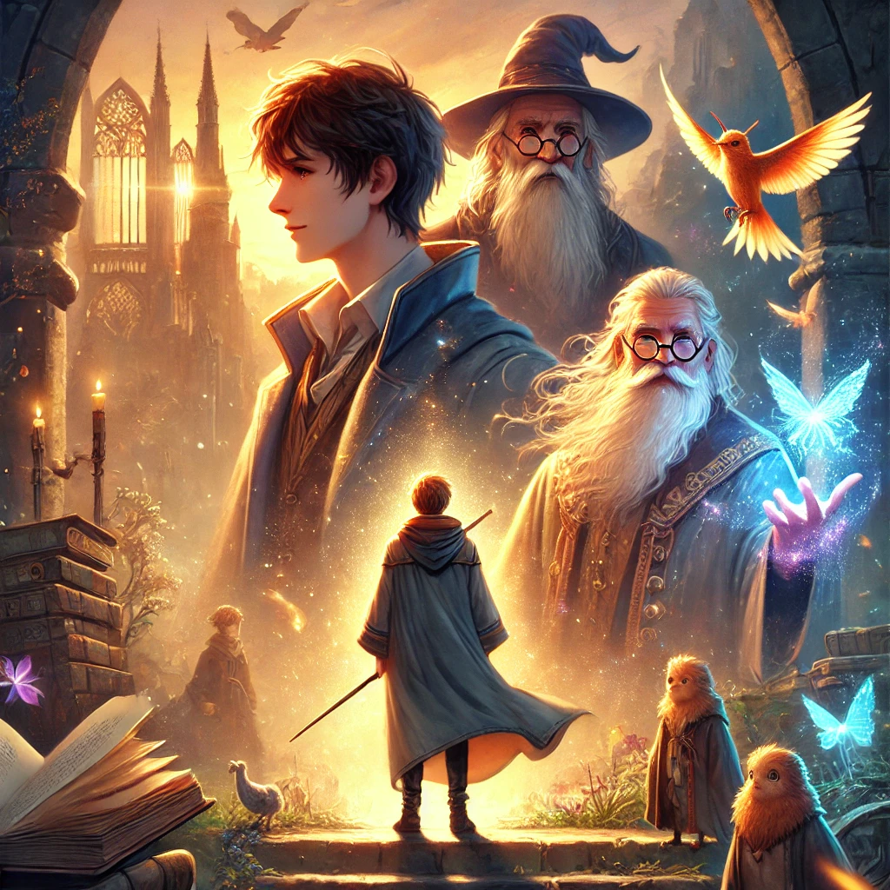

신비한 동물들과 덤블도어의 비밀
목차
작가
J.k. 롤링 & 스티브 클로브스
출판일
2022년 7월 19일
감상평에 대한 AI그림
혼란스러운 시대 속에서도 뉴트와 그의 동료들은 희망을 잃지 않았다.
덤블도어의 깊은 고뇌와 숨겨진 진실이 하나씩 밝혀질 때마다 가슴이 저릿했다.
마법도, 운명도 결국 사람의 선택에서 시작된다는 걸 다시금 깨닫게 해준 이야기인 것 같다.

감상평에 대한 AI평가
이 감상평은 다음의 감정을 중심으로 구성되어 있습니다.
✨ 희망과 동료애: 혼란 속에서도 뉴트와 그의 동료들이 끝까지 희망을 잃지 않는 모습이 인상적이며, 그들의 유대감이 더욱 빛을 발합니다.
✨ 고뇌와 진실: 덤블도어의 깊은 고뇌와 그가 감춰온 진실이 하나씩 밝혀질 때마다, 그의 인간적인 면모와 책임감이 더욱 강하게 다가옵니다.
✨ 선택과 운명: 마법 세계를 뒤흔드는 거대한 사건들 속에서 결국 중요한 것은 개인의 선택이라는 메시지가 강렬한 여운을 남깁니다.
이 감상평은 마법뿐만 아니라, 인간의 신념과 선택이 만들어가는 운명의 흐름을 깊이 있게 성찰하게 하는 글입니다.